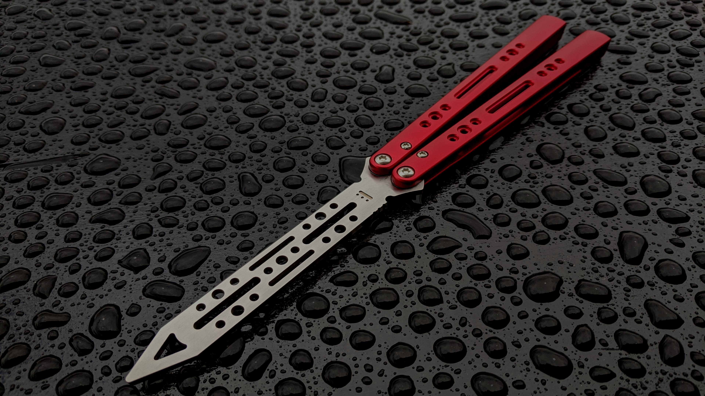
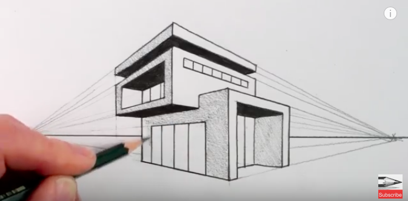
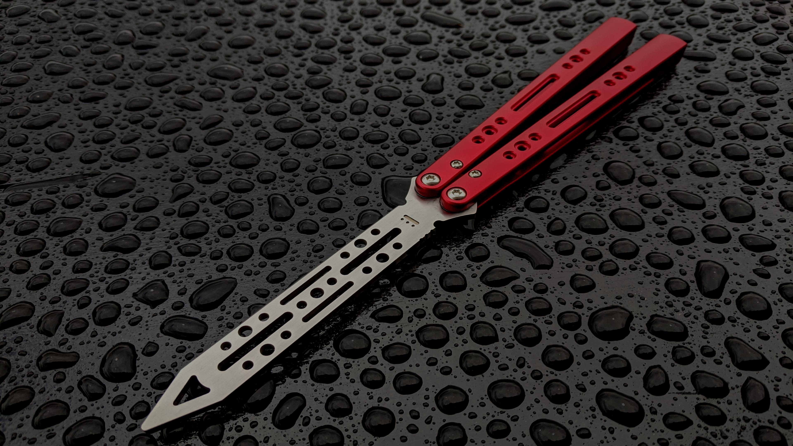
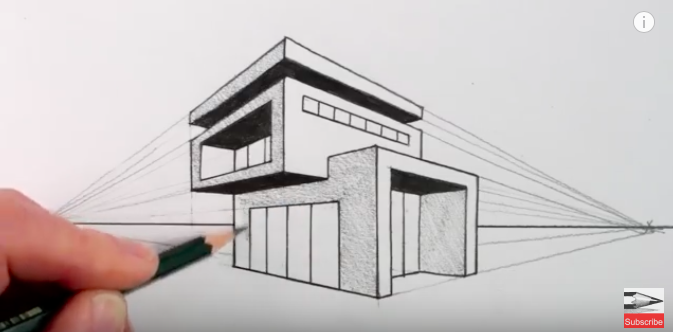
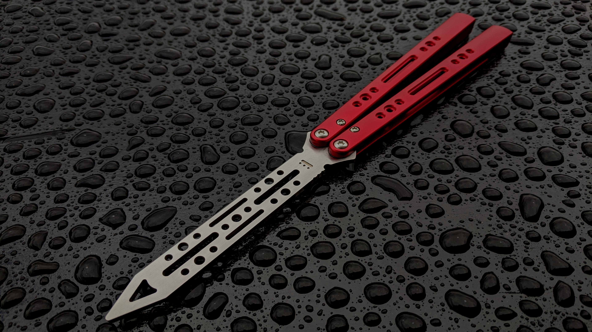
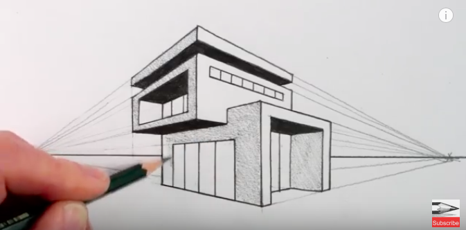
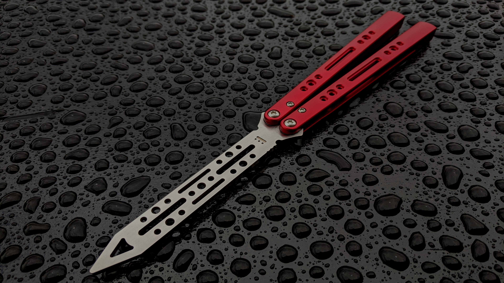
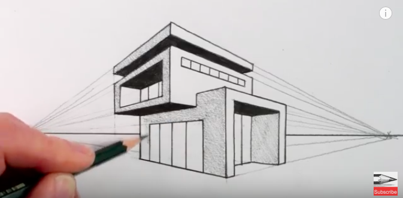

 



I started playing basketball when I was still in first grade. My father taught me how to and ever since then, I played it almost everytime I see a court. I also picked up badminton this pandemic and it was my father who taught me how to play. Both my parents were badminton and lawn tennis players so I can say that I got their athletic genes. I also think that I am a fast runner. In the future, I would also like to learn how to play baseball, soccer/football or even volleyball.
Last year, I really hated Computer Science because I could not understand anything which led me to hate the subject. Now I really enjoy coding because the satisfaction of your code working and it came out the way you pictured it to be, is through the roof. I really enjoy learning about HTML and CSS and creating a website and I was planning to make one for the business of my parents.
Last year, I really hated Computer Science because I could not understand anything which led me to hate the subject. Now I really enjoy coding because the satisfaction of your code working and it came out the way you pictured it to be, is through the roof. I really enjoy learning about HTML and CSS and creating a website and I was planning to make one for the business of my parents.
If you will ask me what my dream profession is, I would answer being an architect. I'm not good at drawing but still I picked it up as a hobby. It would also be a potential practice for me in the upcoming years that I will take in the architecture course.
Monopoly, The Game of Life, Game of the Generals, Connect 4, and Jenga are some of the most popular board games out there. For me, these plus the whole family is my dream Friday night. I've always wanted to play with my family and cousins without any form of electronic, just pure social interaction. It might also be fun to have this sort of interaction at school when it becomes f2f.